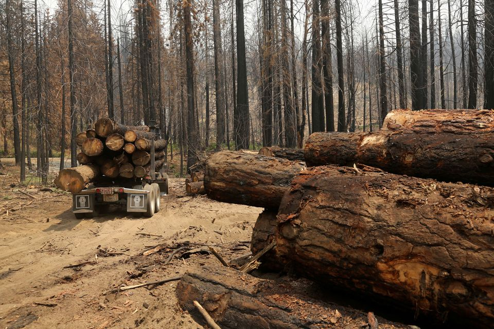

End Deforestation and Restore
Degraded Forests
Deforestation and forest degradation are the biggest threats to forests worldwide.
Over half of the tropical forests worldwide
have been destroyed since the 1960s, and every second, more than one hectare of tropical forests is destroyed
or drastically degraded.
The degradation and loss of forests threatens the survival of many species, and reduces the ability of forests to provide
essential services.
Deforestation and forest degradation impact the lives of 1.6 billion people whose livelihoods depend on forests.
One billion of them are among the world’s poorest.
Nature-based Solutions such as forest landscape restoration (FLR) can reverse the effects of deforestation and degradation
and regain the ecological, social, climatic and economic benefits of forests.
What is the issue?
Deforestation and forest degradation are the biggest threats to forests worldwide. Deforestation occurs when forests
are converted to non-forest uses, such as agriculture and road construction. Forest degradation occurs when forest ecosystems
lose their capacity to provide important goods and services to people and nature.
Over half of the tropical forests worldwide have been destroyed since the 1960s, and every second, more than one hectare of
tropical forests is destroyed or drastically degraded. This intense and devastating pressure on forests is not limited to
the tropics an estimated 3.7 million hectares of Europe’s forests are damaged by livestock, insects, diseases, forest fires, and
other human-linked activities.
Why is it important?
Biodiversity
Over 80% of the world’s terrestrial biodiversity can be found in forests from pine trees in the boreal North to the rainforests in the tropics.
The degradation and loss of forests threaten the survival of many species, and reduce the ability of forests to provide essential services
such as clean air and water, healthy soils for agriculture, and climate regulation.
Sustainable livelihoods
Healthy forests support the livelihoods of 1.6 billion people globally, one billion of whom are among the world’s poorest.
Deforestation and forest degradation have real and tangible impacts on the lives of these vulnerable communities. For example, 52 per cent of
all land used for food production is moderately or severely impacted by the erosion of healthy soil. This occurs when trees are removed from a landscape,
leading to increased food insecurity.
Climate mitigation and adaptation
The world’s forests absorb 2.4 billion tonnes of carbon dioxide (CO2) per year, one-third of the annual CO2 released from
burning fossil fuels. Forest destruction emits further carbon into the atmosphere, with 4.3–5.5 GtCO2eq/yr generated annually, largely from
deforestation and forest degradation. Protecting and restoring this vast carbon sink is essential for mitigating climate change.
Forests also play a crucial role in climate change adaptation efforts. They act as a food safety net during climate shocks,
reduce risks from disasters like coastal flooding, and help regulate water flows and microclimates. Improving the health of these forest ecosystems
and introducing sustainable management practices increase the resilience of human and natural systems to the impacts of climate change.
What can be done?
Forest landscape restoration (FLR)
Nature-based Solutions such as forest landscape restoration can help countries reverse the effects of deforestation and degradation and
regain the ecological, social, climatic and economic benefits of forests.
FLR brings people together to identify and implement the most appropriate restoration interventions in a landscape. It seeks to accommodate
the needs of all land users and multiple land uses.
FLR is not just about planting trees it can include multiple activities like agroforestry, erosion control and natural forest regeneration.
FLR also addresses the underlying drivers of forest loss. For example, it provides farming communities living in and around forests with knowledge
on sustainable agricultural methods that do not rely on destroying forests.
What is the issue?
Why is it important?
What can be done?
Back To Top
Back To Home
